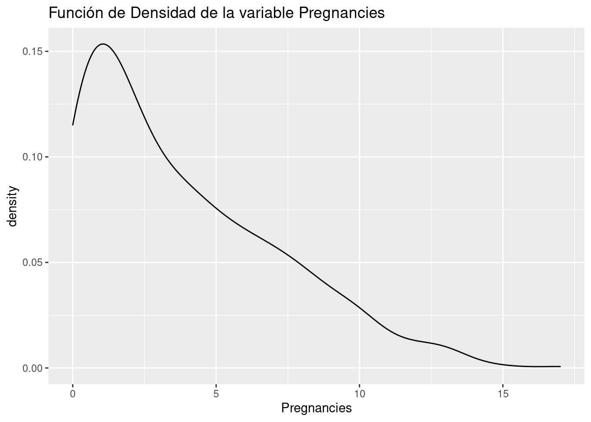
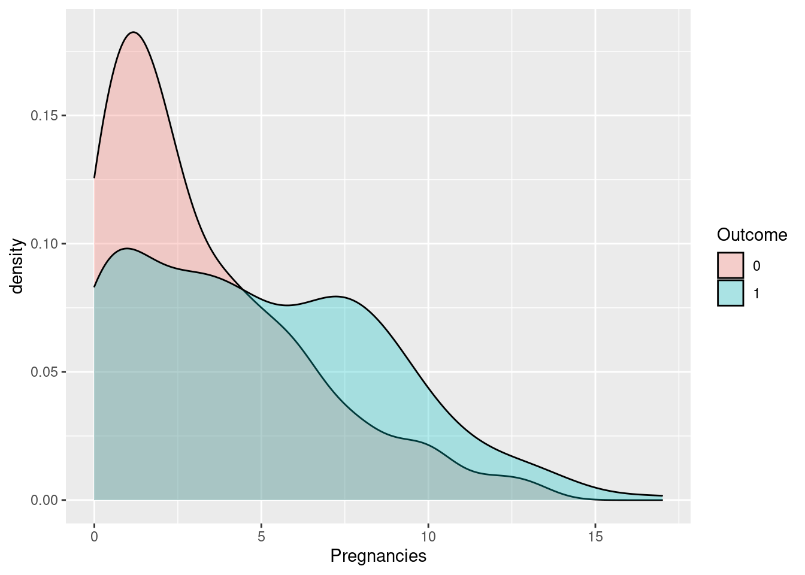
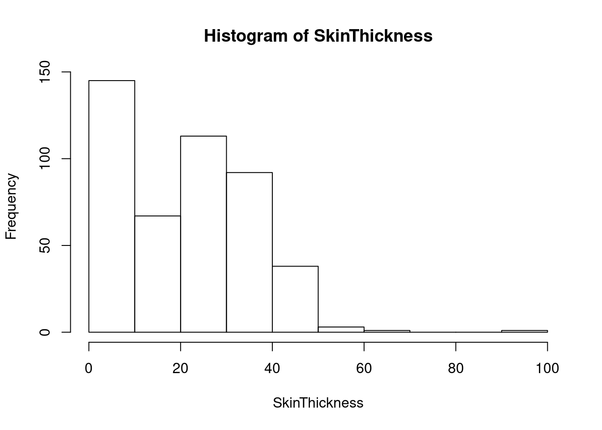

4 Preprocesado de datos
Bla Bla Bla
4.1 EDA. Exploratory Data Analysis.
En primer lugar, corregimos la variable salida “Outcome”, convirtiéndola en binaria (factor).
## Min. 1st Qu. Median Mean 3rd Qu. Max.
## 0.000 1.000 3.000 3.811 6.000 17.000## Pregnancies
## 0 1 2 3 4 5 6 7 8 9 10 11 12 13 14 17
## 71 74 62 47 42 40 30 24 20 16 11 8 5 7 2 1ggplot(data=diabetes,aes(Pregnancies))+
geom_density()+
ggtitle("Función de Densidad de la variable Pregnancies")
4.2 Correlación entre las variables.
Estudiamos la correlación entre las variables explicativas y la variable respuesta.
4.2.1 Pregnancies:
 Realizamos un contraste de hipótesis (t.test) para comprobar si hay diferencias significativas entre los dos grupos de interés:
##
## Welch Two Sample t-test
##
## data: Pregnancies by Outcome
## t = -4.4586, df = 249.3, p-value = 1.248e-05
## alternative hypothesis: true difference in means is not equal to 0
## 95 percent confidence interval:
## -2.267607 -0.878051
## sample estimates:
## mean in group 0 mean in group 1
## 3.284314 4.857143Se puede concluir que la variable Pregnancies es importante para determinar si una mujer va a ser diabética o no.
4.3 Transformación de variables
Bla bla bla

Aparentemente hay valores 0 que corresponden con mujeres a las que no se les tomó esta medida.
Skin_cat = cut(SkinThickness,c(-1,0.1,20,40,1000),labels=c("NS/NC","Bajo","Medio","Alto"))
table(Skin_cat,Outcome)## Outcome
## Skin_cat 0 1
## NS/NC 91 50
## Bajo 62 9
## Medio 130 75
## Alto 23 20##
## Pearson's Chi-squared test
##
## data: table(Skin_cat, Outcome)
## X-squared = 18.213, df = 3, p-value = 0.0003975Hemos transformado la variable, categorizándola en 4 niveles. La nueva variable resulta ser estadísticamente significativa. Es decir, es una variable que debemos tener en cuenta en la construcción de los modelos de Machine Learning (ML).